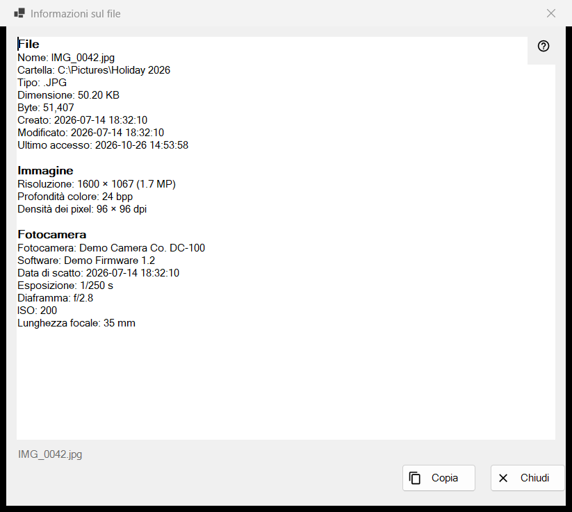
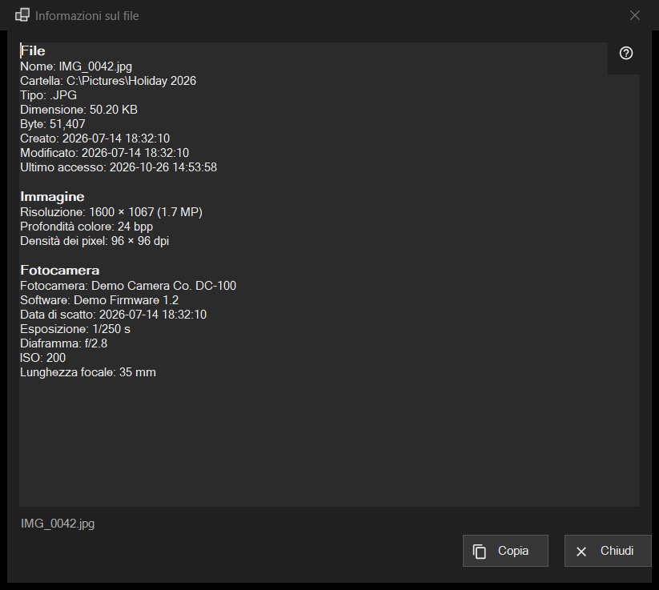

Informazioni sul file
Scopo
Un'istantanea di sola lettura di ciò che il programma sa del file sullo schermo: il file stesso, un'immagine con i dati della fotocamera, un documento, e le tracce audio e video. Si apre dalla voce i del primo pannello, oppure da Informazioni sul file nel blocco del file dei menu del visualizzatore, e descrive il file com'era nel momento del clic.


In questo ordine
- Mostra un file nel visualizzatore.
- Fai clic sulla voce i del primo pannello, oppure scegli Informazioni sul file nel menu.
- Attendi un momento: la riga di stato dice Lettura dei metadati del file.. e le righe si riempiono.
- Leggi i blocchi, seleziona ciò che ti serve e premi Copia per mettere tutto il testo negli appunti.
- Premi Chiudi o Esc.
Gli elementi
File
Ogni file ha questo blocco: Nome, Cartella, Tipo, Dimensione, Byte, Creato, Modificato, Ultimo accesso e Attributi. Una riga senza nulla da mostrare viene omessa. Se nessun file è aperto la riga di stato dice Nessun file selezionato; una copia temporanea da un archivio, un indirizzo remoto o un file scomparso dà Il file non è disponibile, e non si apre nessuna finestra.
Immagine
Per un'immagine: Risoluzione come visualizzata (una foto del telefono salvata di lato si legge nella sua dimensione dritta), Profondità colore e Densità dei pixel, quando il file li registra.
Fotocamera
Letto dai dati EXIF della foto: Fotocamera, Software, Data di scatto, Esposizione, Diaframma, ISO, Lunghezza focale e Autore. Le coordinate compaiono solo se la foto contiene dati GPS, e Copia le include: controlla il testo prima di condividerlo.
Documento
Per un file di testo: Righe, Parole, Caratteri e Codifica, più Il file è stato letto solo in parte quando è troppo grande per essere letto per intero. Per un e-book: Nome e Autore. Per un PDF: Pagine.
Media, Video e Audio
Per i file audio e video i tag (Nome, Artista, Album, Anno, Traccia, Genere, Regista, Serie, Stagione, Episodio, Durata) e la prima traccia di ogni tipo (Video: Risoluzione, Fotogrammi al secondo, Codec, Bitrate; Audio: Codec, Canali, Frequenza di campionamento, Bitrate) vengono aggiunti un istante dopo il resto, quando il motore multimediale finisce di leggere. La finestra non lo aspetta mai. I flussi di rete non hanno righe di tracce.
Copia e Chiudi
Copia mette tutto il testo negli appunti e la riga di stato dice Copiato negli appunti; se un altro programma sta occupando gli appunti, lo dice e puoi premere di nuovo Copia. Funziona anche una selezione copiata con Ctrl+C. Se non è stato possibile leggere nulla, il riquadro dice Impossibile leggere le informazioni sul file. Accanto ai pulsanti la riga di stato mostra il nome del file. Passare a un altro file non cambia questa finestra: fai di nuovo clic su i per il nuovo file.